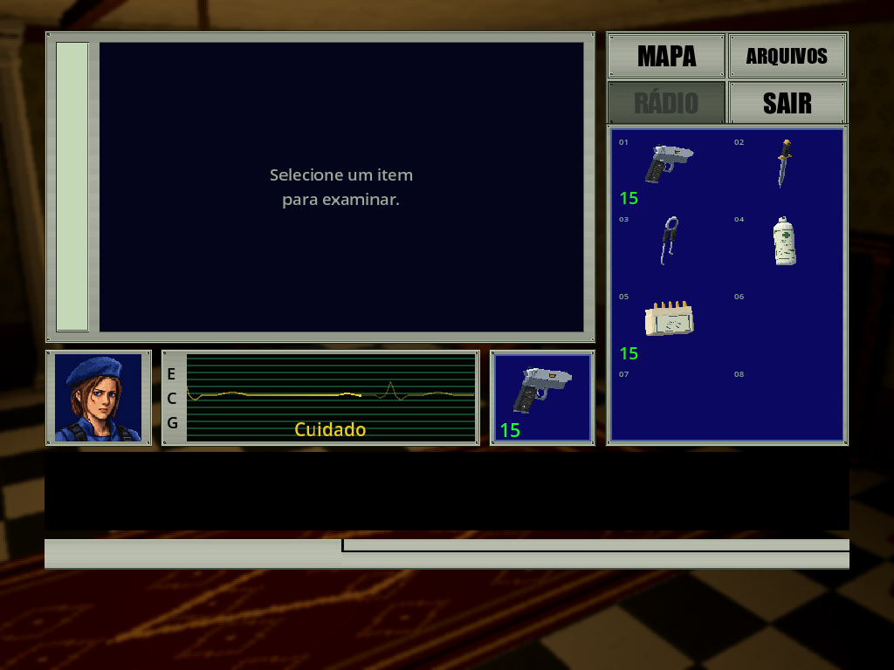

Portraits de Jill · 15/10/2026
As capturas genéricas atuais de inventário/baú também acompanham a
revisão de detalhes e destaques, preservando
os mesmos retratos aprovados. As substituídas ficam em
media/history/pre-accents-2026-10-15/; os checks desta rodada continuam históricos.
O inventário usa Jill com expressão séria, boca firme e olhos semicerrados. Cuidado e Perigo conservam seus ferimentos, suor, palidez e cansaço próprios. A seleção conserva a foto civil e o sorriso discreto, com olhos mais serrados. Estilo PS1, roupa, boina, identidade, enquadramento e filtro nearest preservados.



As imagens acima são capturas de widgets de produção no Godot Compatibility, com estados dirigidos em fixture offline. Não são partidas manuais.
Fontes e reprodução
Quatro edições pela ferramenta integrada image_gen, sem pós-processamento:
Assets/Portraits/jill.png, jill-caution.png, jill-danger.png e
Assets/Portraits/Civilian/jill.png. Prompts completos, SHA-256 e hashes dos
alvos anteriores nos dois prompts.json dessas pastas. Os PNGs integrados são
cópias binárias das saídas da ferramenta. O gerador verifica e preserva as
fontes; não recria os retratos proceduralmente. Os demais personagens não mudam.
Prompts finais: preservar identidade e pixels PS1; baixar as pálpebras e reduzir a área branca dos olhos. No inventário, expressão séria, resoluta, boca fechada e sinais de saúde preservados; na foto civil, alterar apenas olhos e pálpebras, conservando a expressão existente. Textos integrais nos manifestos.
python -B Tools/generate_assets.py --inventory
python -B Tools/validate_project.py --report Build/jill-portraits-2026-10-15/validation.json
dotnet run --project Tests/CoreTests.csproj -- Data/scenario.json
dotnet build OperationSpencer.csproj -c Debug
. ./Tools/Common.ps1
$portraitEngine = Resolve-Godot
& $portraitEngine --headless --path . --editor --import --quit
& $portraitEngine --path . --rendering-method gl_compatibility res://Tools/JillPortraitPreview.tscn -- --profile fixture-jill-portraits-20261015 --campaigns-root "$PWD/Build/jill-portraits-2026-10-15/campaigns"
python -B Tools/build_public_galleries.py --refresh-jill
python -B Tools/documentation_inventory.py
python -B Tools/validate_docs.py
python -m mkdocs build --strict
O exportador preserva cartão, inventário e baú anteriores em
media/history/pre-jill-2026-10-15/, sem alterar seus hashes ou contexto de
captura. README, portal e acervo usam as capturas atuais; as evidências datadas
da interface anterior apontam para as imagens preservadas.
Verificações e limites
- Gerador de inventário e validador Python: aprovados; hashes conferidos.
- CoreTests: 86 aprovados, zero falhas.
- Build C#: aprovado, zero erros e avisos.
- Importação Godot 4.7.2 stable .NET: aprovada.
- Fixture renderizada: 12 verificações aprovadas e sete capturas; seleção e
inventário em 1024×768/1280×720, Bem/Cuidado/Perigo e baú. Revisão visual das
capturas: olhos semicerrados legíveis, retratos enquadrados, ferimentos
distintos e estilo PS1 conservado. Saídas em
Build/jill-portraits-2026-10-15/. - Testes Python de release: 21 aprovados.
- Validador documental e build MkDocs com
--strict: aprovados; 377 registros públicos com hashes conferidos. Índice documental regenerado.
A primeira tentativa da fixture falhou porque --campaigns-root recebeu
res:// em vez de caminho de filesystem; o cartão também estava fora da
camada de UI. Na segunda, o baú foi capturado longe do ponto de interação.
A fixture foi corrigida, recebeu verificações do baú e passou na execução
final. Não houve correção de comportamento do jogo para contornar esses erros.
Esta revisão não altera rede/save nem suas regras. Não foram reexecutados smoke de rede ou cenários de reconexão/restore. Não houve teste com controles físicos, multiplayer, exportação ou medição de desempenho.